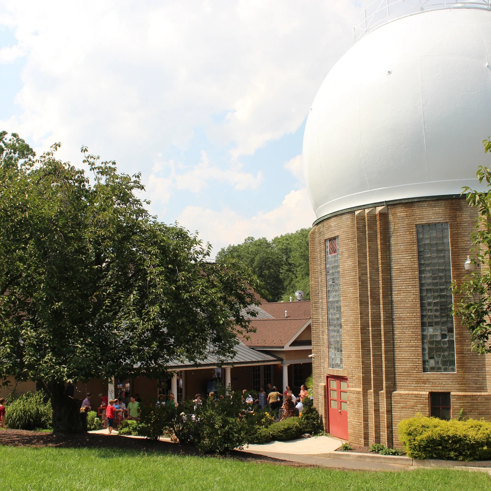

Envisioning the Future of Critical Minerals and Materials Cyberinfrastructure
A two-day working meeting to design a shared digital network for critical minerals and materials — convening academia, government, and industry to set a strategic national roadmap.
Applications open soon. · Travel support available for approximately 80 participants.
Building the data backbone for critical minerals discovery
Modern technologies rely on secure supplies of essential minerals. Finding these resources increasingly depends on integrating data from a wide range of sources. Yet geological datasets are inherently multi-scale, multi-disciplinary, and multi-modal, which pushes existing academic and government data storage and distribution infrastructures to their absolute limits.
This workshop will bring together experts to discuss and design a shared digital network for critical minerals and materials. Outcomes of this event will help secure vital supply chains, strengthen national infrastructure, and train a modern science workforce.
The two-day meeting convenes participants from academia, government, and industry to establish a strategic roadmap for critical minerals cyberinfrastructure, addressing multi-modal data integration, data silo harmonization, and interoperability standards for artificial-intelligence-driven economic geology.
Workshop format
Two days of structured, participatory work rather than a conference program:
- Invited keynotes framing the national landscape
- Lightning presentations from participants
- Structured breakout sessions producing roadmap content
What we will work on
Multi-modal data integration
Bringing geochemical, geophysical, mineralogical, imaging, and textual sources into workflows that treat them as one evidence base.
Data silo harmonization
Connecting datasets held across academic labs, federal surveys, and industry so they can be discovered and reused together.
Interoperability standards
Vocabularies, identifiers, and exchange formats that make AI-driven economic geology reproducible across institutions.
A modern science workforce
Training pathways and community practices that sustain the infrastructure long after the workshop concludes.
Workshop co-leaders
Dr. Xiaogang Ma
University of Idaho
Dr. Shaunna Morrison
Rutgers University
Dr. Anirudh Prabhu
Carnegie Science
Dr. Tao Wen
Syracuse University
Apply to join the workshop
We expect to support approximately 80 participants from academia, government, and industry. Applications are collected through a short online form.